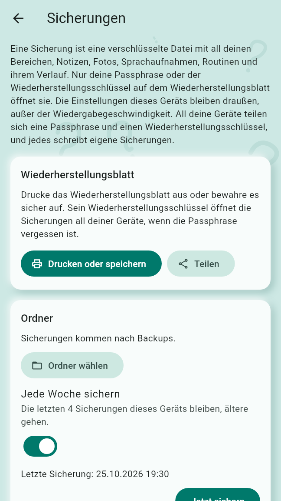
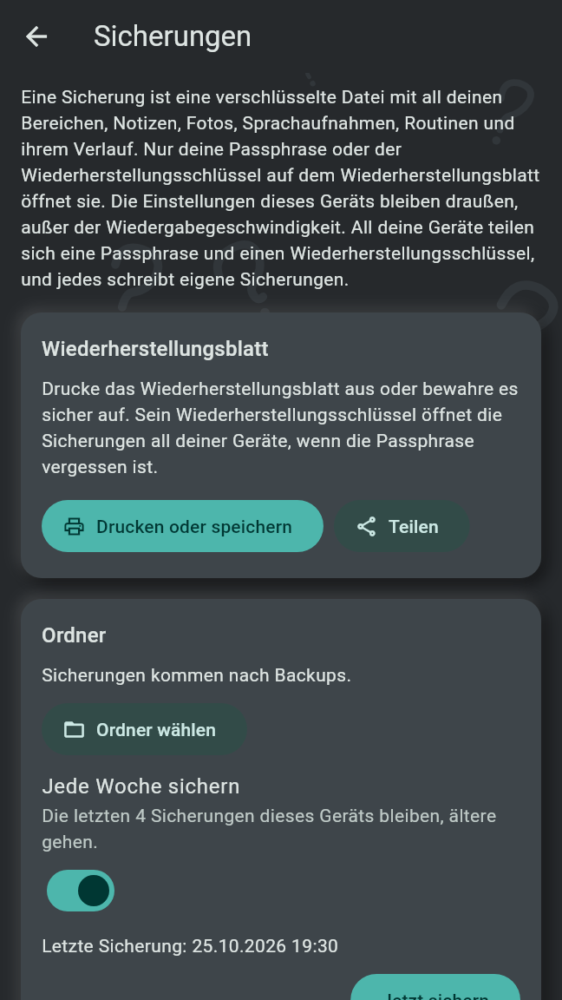
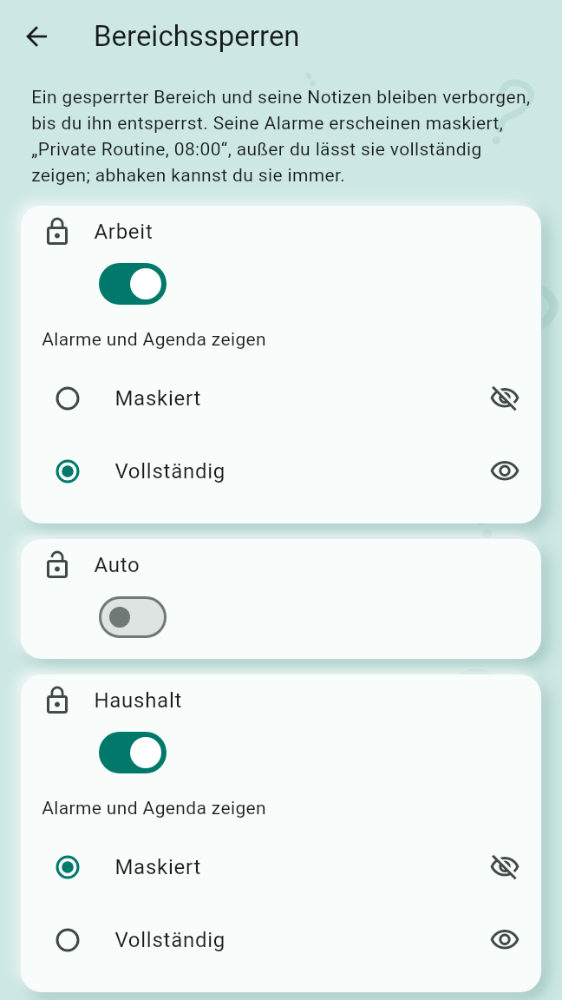
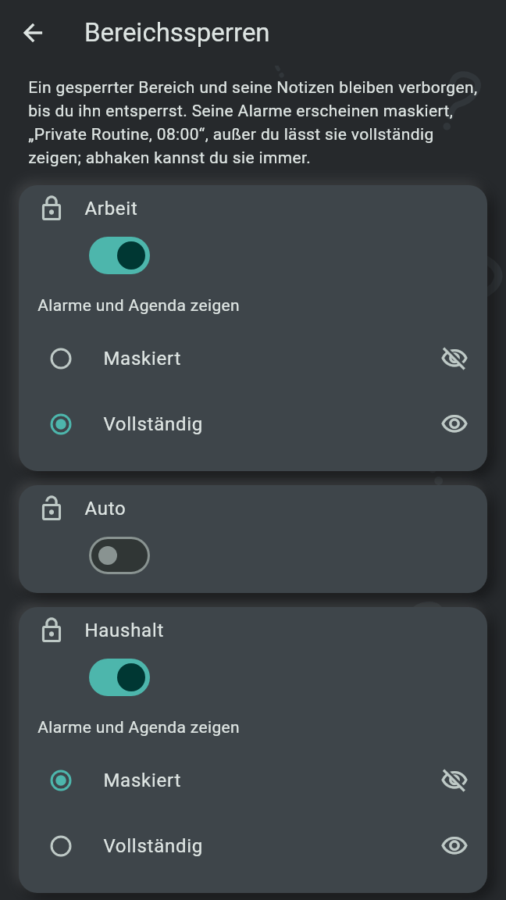

Sicherungen sind verschlüsselte Dateien mit allem, was auf einem Gerät ist, geöffnet mit deiner Passphrase oder mit dem Wiederherstellungsschlüssel auf dem Wiederherstellungsblatt. Die App-Sperre und die Bereichssperren halten andere auf dem Handy vom Stöbern in deinen Notizen ab, und eine Blockierung hält das Geschriebene eines Menschen von deinen Geräten fern.
Auf der Profilseite unter „Sicherungen und Wiederherstellung“ öffnet Dieses Gerät sichern die Sicherungen. „Eine Sicherung ist eine verschlüsselte Datei mit all deinen Bereichen, Notizen, Fotos, Sprachaufnahmen, Routinen und ihrem Verlauf. Nur deine Passphrase oder der Wiederherstellungsschlüssel auf dem Wiederherstellungsblatt öffnet sie. Die Einstellungen dieses Geräts bleiben draußen, außer der Wiedergabegeschwindigkeit. All deine Geräte teilen sich eine Passphrase und einen Wiederherstellungsschlüssel, und jedes schreibt eigene Sicherungen.“
Tippe eine Passphrase unter Passphrase und noch einmal unter Passphrase wiederholen ein: mindestens 8 Zeichen, und ein kurzer Satz ist leicht zu merken. Sicherungen einrichten dauert ein paar Sekunden. Sind sie auf einem deiner anderen Geräte schon eingerichtet, brauchen sie hier kein Einrichten: Gleiche mit diesem Gerät ab, dann übernimmt dieses dieselbe Passphrase und denselben Wiederherstellungsschlüssel.
Das Wiederherstellungsblatt ist eine PDF-Seite mit deinem Wiederherstellungsschlüssel, als Text und als QR-Code. Der Wiederherstellungsschlüssel öffnet die Sicherungen all deiner Geräte, auch wenn die Passphrase vergessen ist, also kann sie lesen, wer ihn hat: Bewahre das Blatt sicher auf, in einer Schublade oder einem Passwort-Manager, nie neben den Sicherungen. Drucken oder speichern öffnet den Druckdialog, Teilen gibt das PDF an die App, die du wählst. Die Seite der Sicherungen bietet beides jederzeit an, nicht nur nach dem Einrichten. Das Blatt sagt auch, wie man wiederherstellt.
„Sicherungen kommen in einen Ordner deiner Wahl: auf diesem Gerät, auf einem USB-Stick oder in einer Cloud-App.“ Ordner wählen wählt ihn und schreibt sofort die erste Sicherung hinein. Dann:
Jede Sicherung ist eine Datei, benannt nach der Zeit, zu der sie geschrieben wurde, mit der Endung
.obfbackup.


Auf einem Android-Handy bieten die Sicherungen außerdem Die neueste Sicherung auch in meinem Google-Konto aufbewahren an, anfangs aus. „Die Sicherung von Android bewahrt dann die neueste Sicherungsdatei, verschlüsselt wie sie ist, in deinem Google-Konto auf, sonst nichts von der App. Auf einem neuen Handy kommt sie mit deinen Apps zurück, und die App fragt nach der Passphrase oder dem Wiederherstellungsschlüssel.“ Ist sie an, braucht die wöchentliche Sicherung keinen Ordner. Google nimmt höchstens 25 MB: Eine größere Sicherung wird dort nicht aufbewahrt, und die Seite sagt es; ein Ordner nimmt sie weiter.
Eine Sicherung wird beim ersten Start eines Geräts wiederhergestellt, das noch keine Notizen enthält, mit Aus einer Sicherung wiederherstellen (siehe Erste Schritte): Wähle die Sicherungsdatei, dann tippe die Passphrase ein, oder tippe oder scanne den Wiederherstellungsschlüssel vom Wiederherstellungsblatt. Einstellungen wie Alarme, Ruhezeit und Sperren sind nicht in einer Sicherung; stell sie danach neu ein, wähle den Sicherungsordner noch einmal und kopple deine anderen Geräte noch einmal.
Einstellungen, unter „Privatsphäre“: Die App-Sperre „fragt nach der PIN, bevor deine Notizen zu sehen sind. Erfassen und Alarme brauchen sie nie.“ Solange die App gesperrt ist, zeigt sie „Old Brain Fix ist gesperrt“ mit dem PIN-Feld und Entsperren; ihr „+“ fächert die Wege zum Erfassen auf wie auf der Agenda, ohne zu entsperren.
Hinter der App-Sperre warten eine gesendete Notiz, die aus einer anderen App geöffnet wurde, ein Profilkartenlink und ein Tippen auf den Änderungs-Stupser, bis die App entsperrt ist.
Unter der App-Sperre listet Bereichssperren jeden Bereich mit seinem Schalter. „Ein gesperrter Bereich und seine Notizen bleiben verborgen, bis du ihn entsperrst.“ In der Liste der Bereiche fragt ein gesperrter Bereich beim Öffnen nach der PIN oder dem Fingerabdruck; er bleibt offen, bis die App wieder sperrt oder du zurück auf der Agenda bist. {Bereich} dauerhaft entsperren fragt ebenso, bevor eine Sperre ausgeht.
Solange ein Bereich gesperrt ist, wählt „Alarme und Agenda zeigen“:
Eine Routine eines maskierten Bereichs, die in deinen Kalender geschrieben wird, steht dort als „Private Routine“. Eine Notiz eines gesperrten Bereichs wird nie an eine andere App gegeben, solange der Bereich zu ist.


Die Sperren und die PIN sind Einstellungen des Handys, auf dem sie gesetzt wurden: Sie werden nicht abgeglichen und sind nicht in einer Sicherung.
Im Profil eines anderen Menschen sitzt Blockieren in der Leiste; die Vorschau einer gesendeten Notiz oder eines geteilten Bereichs bietet Ablehnen und blockieren an. „Alles, was {Name} geschrieben hat, wird außer den Erledigt-Haken von deinen Geräten gelöscht, und nichts Neues dieser Person wird behalten. Ein geteilter Ordner kann noch verschlüsselte Dateien dieser Person enthalten, die die App nie öffnet; verlässt du den Ordner, sind sie fort.“
Alles, was du erfasst, bleibt auf deinen eigenen Geräten: auf dem Gerät, auf dem du es erfasst hast, auf den Geräten, die du damit gekoppelt hast, und bei einer Notiz in einem geteilten Bereich auf den Geräten der Menschen dieses Bereichs. Einstellungen bleiben auf jedem Gerät. Es gibt keinen Server und kein Konto. Die Datenschutzerklärung nennt, was die App speichert, wann sie online geht und wofür jede Berechtigung dient.